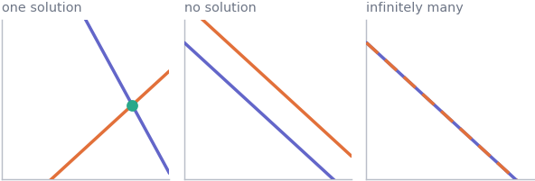
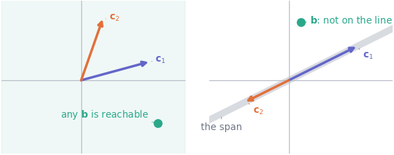
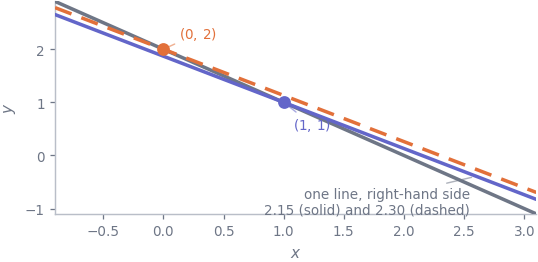

10. Solving Ax = b
Mathematics · Unit 10
Why this unit is here
M9 asked what a matrix does to a vector. This unit asks the reverse: given the matrix and the answer you want, which input produces it? That question is what “solving” means, and it is where fitting a model ends up once you stop walking downhill and write the condition for the best fit directly.
The part that matters most is not the arithmetic — a library does that in one call. It is knowing which of three situations you are in: exactly one solution, none at all, or infinitely many. With real data the honest answer is usually none, and recognising that rather than fighting it is precisely what M11 is for.
10.1 Before you start
You should be able to:
- multiply a matrix by a vector, by rows and by columns — M9;
- check that two shapes can legally be multiplied — M9;
- recognise when two vectors point along the same line — M8;
- call a NumPy function and read what it returns — P6.
Quick check. Solve \(2x + y = 7\) and \(x - y = 2\).
TipShow the answer
Add the two equations: \(3x = 9\), so \(x = 3\), and then \(y = 1\).
You have just done Gaussian elimination on a \(2 \times 2\) system. Everything below is that, plus a vocabulary for the cases where it does not work.
10.2 The idea
A system of linear equations is a matrix equation. These two,
\[ \begin{aligned} 2x + y &= 7 \\ x - y &= 2 \end{aligned} \qquad\text{are}\qquad \underbrace{\begin{pmatrix} 2 & 1 \\ 1 & -1\end{pmatrix}}_{A} \underbrace{\begin{pmatrix} x \\ y \end{pmatrix}}_{\mathbf{x}} = \underbrace{\begin{pmatrix} 7 \\ 2 \end{pmatrix}}_{\mathbf{b}} , \]
and as in M9 there are two ways to look at that, both worth having.
The row picture. Each row is one equation, and in two variables each equation is a line. A solution is a point on every line at once — an intersection. Two lines in a plane can cross once, never (parallel), or everywhere (the same line drawn twice), and those are the only possibilities:
The column picture. By the column reading of M9, \(A\mathbf{x}\) is the columns of \(A\) scaled by the entries of \(\mathbf{x}\) and added. So the question “does \(A\mathbf{x} = \mathbf{b}\) have a solution?” becomes
can I build \(\mathbf{b}\) out of the columns of \(A\)?
The set of everything you can build that way is called the span of the columns — the reachable set. A solution exists exactly when \(\mathbf{b}\) lies inside it, and that is a far more useful way to think about it than the lines, because it survives into dimensions you cannot draw.

10.3 The mechanics
Elimination
The method is the one from the quick check, written down carefully: add multiples of one equation to another until the system is triangular, then substitute back. On
\[ \begin{aligned} 2x + \phantom{1}y &= 7 \\ \phantom{2}x - \phantom{1}y &= 2 \end{aligned} \]
subtract \(\tfrac12 \times\) (row 1) from row 2 to remove \(x\) there, leaving \(-\tfrac32 y = -\tfrac32\), so \(y = 1\); substitute into row 1 to get \(x = 3\).
Three operations are allowed, because none of them changes the solution set: swap two rows, multiply a row by a nonzero number, and add a multiple of one row to another. That is the whole algorithm, and numpy.linalg.solve is a careful version of it — careful mainly about which row it uses to eliminate with, because dividing by a tiny pivot destroys accuracy.
Singular matrices
Elimination breaks down when a row eliminates to nothing. For a square \(A\) that happens exactly when the columns are dependent — one is a multiple of the other, or more generally one is a combination of the rest — and such an \(A\) is called singular. A singular matrix has a span smaller than the space it lives in, so most targets are unreachable, and the few that are reachable are reachable in infinitely many ways. Singular is the boundary between the second and third panels of both figures.
For a \(2 \times 2\) matrix there is a single number that detects it, the determinant:
\[ \det \begin{pmatrix} a & b \\ c & d\end{pmatrix} = ad - bc , \qquad\text{singular} \iff \det A = 0 . \]
For the system above, \(\det = (2)(-1) - (1)(1) = -3 \neq 0\), so one solution, which is what we found.
The inverse, and why not to use it
If \(A\) is square and non-singular there is a matrix \(A^{-1}\) with \(A^{-1}A = AA^{-1} = I\), and then
\[ A\mathbf{x} = \mathbf{b} \implies \mathbf{x} = A^{-1}\mathbf{b} . \]
That is the right way to think and the wrong way to compute. Forming \(A^{-1}\) does more arithmetic than solving the system, and every extra operation is another chance to lose digits. Write np.linalg.solve(A, b), not np.linalg.inv(A) @ b — the two agree on well-behaved problems and diverge exactly when you most need the answer, as the check at the end of this unit shows.
When “solvable” is too crude a question
\(\det A \neq 0\) says a unique solution exists. It says nothing about whether you can compute it reliably. If the columns are nearly dependent — the lines nearly parallel — the crossing point is exquisitely sensitive to the right-hand side:

The number that measures this is the condition number, np.linalg.cond(A). Roughly: a condition number of \(10^{k}\) means you can expect to lose about \(k\) digits of accuracy between the data and the answer. It is the same phenomenon that made gradient descent diverge in M6 — a long narrow valley and a nearly singular matrix are two descriptions of one thing.
More equations than unknowns
A dataset gives you one equation per row and one unknown per parameter, so a model with two parameters fitted to 238 students is 238 equations in 2 unknowns. Such a system is overdetermined, and unless the data is exactly linear it has no solution at all. That is not a failure of the data or the method; it is the normal case, and it is the whole reason the next unit exists.
10.4 Worked example
The cohort system has no solution — and the one you can solve instead.
Take the design matrix of M9 and ask for an exact fit: values of \(\boldsymbol{\theta}\) with \(X\boldsymbol{\theta} = \mathbf{y}\), every prediction landing on every student’s actual score.
import numpy as np
import pandas as pd
cohort = pd.read_csv("../data/cohort.csv")
usable = cohort[cohort["final_score"].between(0, 100)]
h, y = usable["hours_practice"].to_numpy(), usable["final_score"].to_numpy()
X = np.column_stack([np.ones(len(h)), h])
print(f"X is {X.shape}: {X.shape[0]} equations in {X.shape[1]} unknowns")
print(f"rank of X {np.linalg.matrix_rank(X)}")
print(f"rank of [X | y] {np.linalg.matrix_rank(np.column_stack([X, y]))}")X is (238, 2): 238 equations in 2 unknowns
rank of X 2
rank of [X | y] 3Those two ranks are the test. The rank of \(X\) is the dimension of the span of its columns; here it is 2, so the reachable set is a plane inside a 238-dimensional space. Attaching \(\mathbf{y}\) raises the rank to 3, which says \(\mathbf{y}\) adds a direction the columns could not reach: \(\mathbf{y}\) is outside the span, and \(X\boldsymbol{\theta} = \mathbf{y}\) has no solution. The right panel of the span figure, in 238 dimensions.
So ask a different question — not hit \(\mathbf{y}\) exactly, but get as close as possible — and the condition for that was already found in M9: the residual must be orthogonal to every column of \(X\), that is \(X^{\mathsf{T}}(\mathbf{y} - X\boldsymbol{\theta}) = \mathbf{0}\). Rearranged, that is a system small enough to solve by hand:
\[ X^{\mathsf{T}}X\,\boldsymbol{\theta} = X^{\mathsf{T}}\mathbf{y} \qquad\Longleftrightarrow\qquad \begin{pmatrix} 238 & 3908.4 \\ 3908.4 & 79872.82 \end{pmatrix} \begin{pmatrix} a \\ b \end{pmatrix} = \begin{pmatrix} 15534.7 \\ 251330.53 \end{pmatrix} \]
238 equations have become 2. Check it is solvable, then solve it:
\[ \det = (238)(79872.82) - (3908.4)^2 = 19{,}009{,}731.16 - 15{,}275{,}590.56 = 3{,}734{,}140.6 , \]
which is not zero, so there is exactly one answer. Eliminate: multiply row 1 by \(3908.4/238\) and subtract it from row 2, leaving a single equation in \(b\); then substitute back for \(a\). The arithmetic is unpleasant enough to be worth handing over:
A = X.T @ X
rhs = X.T @ y
theta = np.linalg.solve(A, rhs)
print(f"det(X'X) {A[0,0]*A[1,1] - A[0,1]*A[1,0]:,.1f}")
print(f"cond(X'X) {np.linalg.cond(A):.1f}")
print(f"theta intercept {theta[0]:.6f} slope {theta[1]:.6f}")
print(f"residual of the solved system {np.linalg.norm(A @ theta - rhs):.3e}")
print(f"but of the original system {np.linalg.norm(X @ theta - y):.4f}")det(X'X) 3,734,140.6
cond(X'X) 1716.7
theta intercept 69.226117 slope -0.240793
residual of the solved system 5.846e-11
but of the original system 125.4985Two residuals, and the difference between them is the whole point of this unit. The \(2 \times 2\) system is solved essentially exactly — a residual of \(6 \times 10^{-11}\) against right-hand sides of order \(10^{5}\) — because that system genuinely has an answer. The original 238-equation system is still missed by 125.5, and no choice of \(\boldsymbol{\theta}\) does better, because \(\mathbf{y}\) is not in the span and nothing can put it there.
The answer itself is the one you have seen twice already: intercept \(69.226117\), slope \(-0.240793\), the same numbers gradient descent walked to in M6 and np.polyfit returned in M9. Three routes — an iterative walk, a library call and a \(2 \times 2\) system solved by elimination — and one answer, which is the reassurance that all three are computing the same thing.
10.5 Try it yourself
Exercise 1 Solve \(\begin{aligned} x + 2y &= 5 \\ 3x - y &= 1\end{aligned}\) by elimination, and check your answer by substitution.
TipShow the solution
Subtract \(3 \times\) (row 1) from row 2: \((3x - y) - 3(x + 2y) = 1 - 15\), so \(-7y = -14\) and \(y = 2\). Then row 1 gives \(x = 5 - 4 = 1\).
Check both equations, not just the one you substituted into: \(1 + 4 = 5\) ✓ and \(3 - 2 = 1\) ✓. Checking only the equation you used to back-substitute will confirm an arithmetic slip rather than catch it.
\(\det = (1)(-1) - (2)(3) = -7 \neq 0\), consistent with there being exactly one solution.
Exercise 2 For each system, say how many solutions it has and why.
\[\text{(a)}\;\begin{aligned} x + y &= 3 \\ 2x + 2y &= 6\end{aligned} \qquad\qquad \text{(b)}\;\begin{aligned} x + y &= 3 \\ 2x + 2y &= 7\end{aligned}\]
TipShow the solution
Both have \(\det = (1)(2) - (1)(2) = 0\), so neither has a unique solution — but they differ, and the determinant alone cannot tell you how.
(a) infinitely many. The second equation is exactly twice the first, so it adds nothing. Every point on \(x + y = 3\) is a solution.
(b) none. The left-hand sides are still proportional but the right-hand sides are not: \(x + y\) cannot be both 3 and 3.5. The lines are parallel and distinct.
In column language: the columns \((1,2)\) and \((1,2)\) span only the line through \((1,2)\). In (a), \(\mathbf{b} = (3, 6)\) lies on that line and is reachable in infinitely many ways; in (b), \(\mathbf{b} = (3, 7)\) does not and is unreachable.
Exercise 3 You fit a model with 5 parameters to 300 rows of data, giving a \(300 \times 5\) matrix \(X\). Someone asks you to solve \(X\boldsymbol{\theta} = \mathbf{y}\) exactly. What do you tell them, and what do you compute instead?
TipShow the solution
There will almost certainly be no exact solution. The columns of \(X\) span at most a 5-dimensional set inside a 300-dimensional space, and a real \(\mathbf{y}\) — with measurement noise, and a model that is at best approximately right — will not lie in it. Only a suspiciously perfect dataset would.
What you compute instead is the \(\boldsymbol{\theta}\) minimising \(\lVert \mathbf{y} - X\boldsymbol{\theta}\rVert\), by solving the \(5 \times 5\) system \(X^{\mathsf{T}}X\boldsymbol{\theta} = X^{\mathsf{T}}\mathbf{y}\).
And the honest footnote: if there were an exact solution with 5 parameters and 300 rows, that would be a reason for suspicion rather than celebration. It would mean \(\mathbf{y}\) landed exactly inside a 5-dimensional slice of a 300-dimensional space, which does not happen by accident. The usual explanation is that one of your columns is secretly a copy of the thing you are predicting. (It does not strictly follow that the data is noise-free — noise that happens to lie along the columns leaves no residual either — but that is a coincidence you should not expect, and looking for a leaked column is the right first move.)
10.6 Check it in Python
Solve, and then check the solution rather than trusting it:
for A_small, b_small in [(np.array([[2.0, 1.0], [1.0, -1.0]]), np.array([7.0, 2.0])),
(np.array([[7.0, 2.0], [3.0, 5.0]]), np.array([1.0, 1.0]))]:
x = np.linalg.solve(A_small, b_small)
print(f"solution {x}")
print(f" A @ x == b ? {np.array_equal(A_small @ x, b_small)}"
f" allclose ? {np.allclose(A_small @ x, b_small)}"
f" residual {np.abs(A_small @ x - b_small).max():.2e}")solution [3. 1.]
A @ x == b ? True allclose ? True residual 0.00e+00
solution [0.10344828 0.13793103]
A @ x == b ? False allclose ? True residual 1.11e-16Both solutions are correct. The first system happens to have a whole-number answer that survives the round trip exactly, so == says True; the second has an answer that does not terminate in binary, and == says False while the residual is \(10^{-16}\). Which one you get is an accident of the arithmetic, so == is never the question to ask. Substitute back and measure the residual.
A singular system refuses, which is the behaviour you want:
singular = np.array([[1.0, 1.0], [2.0, 2.0]])
for target in ([3.0, 6.0], [3.0, 7.0]):
try:
print(f"b={target} ->", np.linalg.solve(singular, np.array(target)))
except np.linalg.LinAlgError as exc:
print(f"b={target} -> LinAlgError: {exc}")b=[3.0, 6.0] -> LinAlgError: Singular matrix
b=[3.0, 7.0] -> LinAlgError: Singular matrixNote that both fail with the same error, although mathematically one has infinitely many solutions and the other has none. solve promises a unique answer and declines whenever it cannot give one; distinguishing the two cases is matrix_rank’s job, as in the worked example.
And the reason not to invert. The Hilbert matrices below are famous for being very nearly singular, which makes them a stress test rather than a realistic case — but the ordering they reveal holds generally:
def hilbert(n):
return np.array([[1.0/(i + j + 1) for j in range(n)] for i in range(n)])
print(f"{'n':>3} {'condition':>10} {'solve error':>12} {'inv @ b error':>14}")
for n in (6, 10, 14):
H = hilbert(n)
x_true = np.ones(n)
b = H @ x_true
err_solve = np.abs(np.linalg.solve(H, b) - x_true).max()
err_inv = np.abs(np.linalg.inv(H) @ b - x_true).max()
print(f"{n:>3} {np.linalg.cond(H):>10.1e} {err_solve:>12.2e} {err_inv:>14.2e}") n condition solve error inv @ b error
6 1.5e+07 2.39e-10 1.05e-09
10 1.6e+13 1.69e-04 5.55e-03
14 6.2e+17 8.90e+00 5.41e+02Two lessons in one table. inv is consistently the worse of the two — by a factor of four at \(n = 6\), thirty at \(n = 10\) and sixty at \(n = 14\) — so prefer solve as a matter of habit. And by \(n = 14\) both are useless: the condition number has passed \(10^{16}\) and the answer carries no correct digits at all. That last part is a statement about double precision, which carries about 16 digits — the condition number says how many of them you lose, so a problem this bad exhausts the supply. Eighty-digit arithmetic would solve the same system perfectly well. What you cannot do is rescue it with a cleverer algorithm at the same precision: the fix is more digits, or a better-posed question.
10.7 Common wrong turns
Where this usually goes wrong
- Computing the inverse to solve a system
-
np.linalg.inv(A) @ bdoes more work thannp.linalg.solve(A, b)and is reliably less accurate. There is almost no reason to form an inverse numerically; if you find yourself typinginv, ask what you actually want. - Assuming a solution exists because the algebra is legal
- With more equations than unknowns the normal outcome is no solution at all. That is a fact about the data, not a bug, and it is why least squares exists.
- Reading \(\det A \neq 0\) as “this will work”
-
A determinant is a yes/no on uniqueness and says nothing about accuracy. A matrix can be comfortably non-singular and still have a condition number of \(10^{10}\), at which point the answer you get is mostly noise. Check
np.linalg.cond, not just the determinant. - Using a tiny determinant as a measure of near-singularity
- Scale every entry of a \(2 \times 2\) matrix by \(0.001\) and the determinant falls by a factor of a million while the matrix is exactly as well behaved as before. The determinant has units; the condition number does not.
- Checking a solution with
== -
A @ x == bwill beFalsefor reasons that have nothing to do with your mathematics. Usenp.allclose, and look at the size ofA @ x - b. - Expecting more data to make a system easier
- More rows means more equations against the same unknowns, which makes an exact solution less likely, not more. What more rows buy you is a better approximate answer, which is a different thing.
10.8 Check yourself
Answers are at the foot of the page. Give a reason as well as an answer.
\(A\) is \(2 \times 2\) with \(\det A = 0\) and \(A\mathbf{x} = \mathbf{b}\) has at least one solution. How many does it have?
- exactly one b. none c. infinitely many d. cannot tell
- In column language, what exactly is the condition for \(A\mathbf{x} = \mathbf{b}\) to have a solution?
- \(X\) is \(300 \times 5\). What are the shapes of \(X^{\mathsf{T}}X\) and \(X^{\mathsf{T}}\mathbf{y}\), and why is turning the problem into that system worth doing?
- Two colleagues solve the same system. One writes
inv(A) @ b, the othersolve(A, b), and they disagree in the sixth decimal place. Who is right, and what should you check next?
np.linalg.solveraisesLinAlgErroron your system. Name the two quite different situations that produce that, and how you would tell them apart.
TipShow the answers
(c) infinitely many. A zero determinant rules out a unique solution, so the only options are none or infinitely many — and we were told at least one exists. Option (d) is the tempting one, but the extra fact given closes it off.
\(\mathbf{b}\) must lie in the span of the columns of \(A\) — it must be expressible as a combination of them. That is the same statement as \(\operatorname{rank}(A) = \operatorname{rank}([A \mid \mathbf{b}])\), which is how you check it in code.
\(X^{\mathsf{T}}X\) is \(5 \times 5\) and \(X^{\mathsf{T}}\mathbf{y}\) has 5 entries. It is worth doing because 300 equations that have no solution become 5 that do, and the size of the system you actually solve stops depending on how much data you have.
First establish whether the disagreement is even large. Sixth decimal place is an absolute measure and tells you nothing on its own — if the solution is of size \(10^{9}\), a gap of \(10^{-6}\) is the last bit of double precision and both answers are excellent. What matters is the disagreement relative to the size of the answer. If that is around \(10^{-6}\), roughly ten digits have been lost, and the thing to check next is
np.linalg.cond(A).solveis the better bet either way, but when conditioning is the problem the response is to reformulate, not to pick a winner.Either the matrix is singular — columns dependent, so no unique solution exists — or it is not square, so
solvedoes not apply at all. The shape distinguishes them immediately. If it is square and singular, comparematrix_rank(A)withmatrix_rank([A | b])to find out whether you are in the “no solutions” case or the “infinitely many” one.